虛擬主機 <<
Previous Next >> 期中報告
近端配置與管理
伺服器(Server)：管理資源並為用戶提供服務的電腦軟體，通常分為檔案伺服器（能使用戶在其它電腦存取檔案），資料庫伺服器和應用程式伺服器。 執行以上軟體的電腦，或稱為網路主機（Host）。
192.168. *---各電腦以DHCP客戶端取得192.168. *的網路位址，為內部網路，好處是外邊連不進來，可避免資料外洩。
140.130. *---為外部網路
當chrome proxy不順 : (1)須了解網路設定，可利用可攜查詢可用網路(2)或從windows10的設定中了解，並前往chrome右上方的設定中更改代理主機
(1)#指令Y:\>ipconfig /all---了解網路設定、狀況
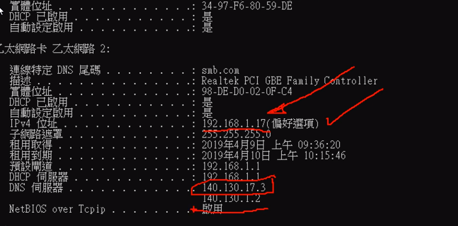
指令Y:\>nslookup (name server look up)---查詢預設伺服器
指令Y:\>proxy.kmol.info---查詢代理主機
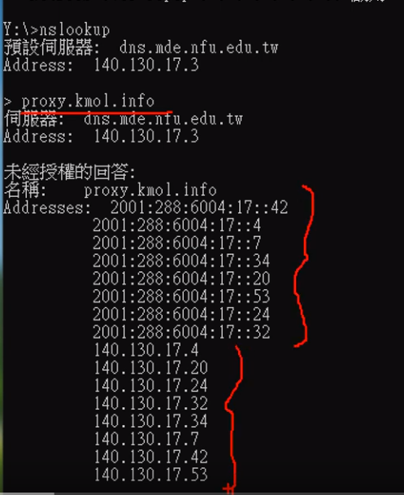
(2)從windows10的設定
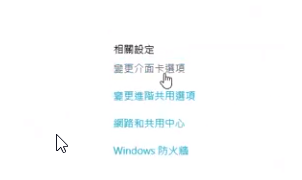
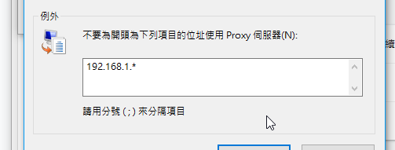


chrome右上方的設定中更改代理主機
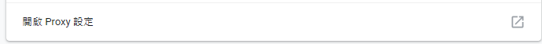
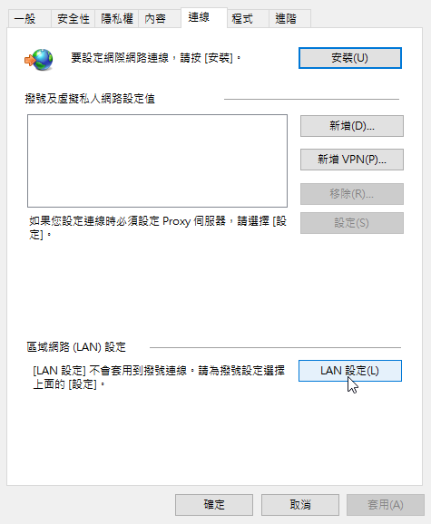
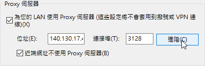
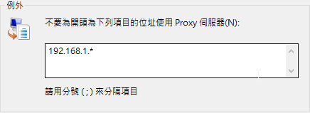
mde.tw
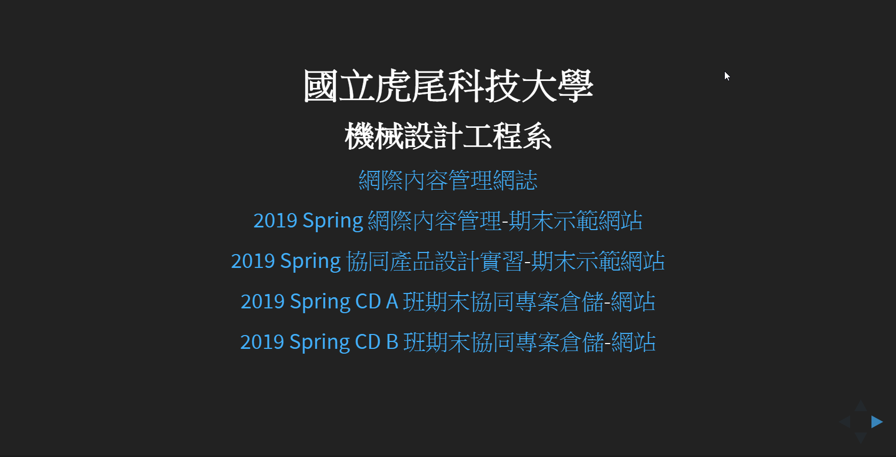
github.com
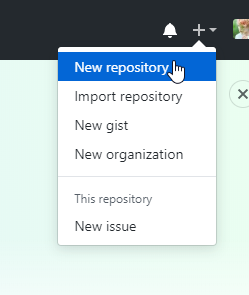
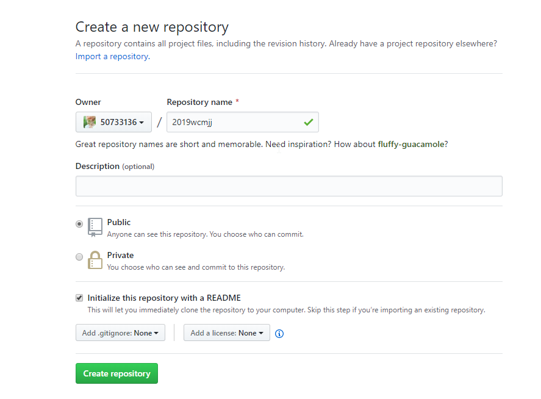
portable programming system
protablegit - remove helper=manager
login github add repository - README.md
git clone self-repo and CMSimfly
y:\home\.gitconfig
git config --global user.name"50733136"
git config --global user.eamil"50733136@gm.nfu.edu.tw"
git config --global http.proxy http://140.130.17.3:3128
git add .
git commit -m " "
git push
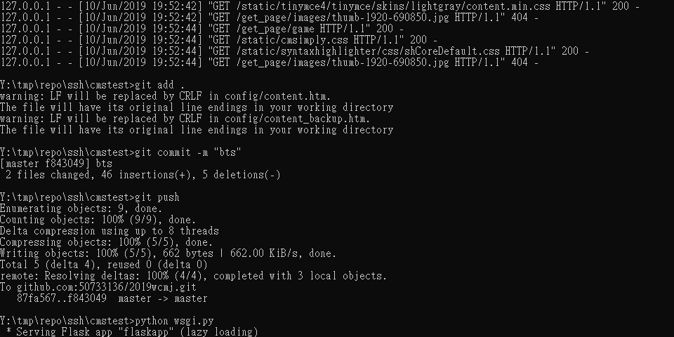
Github Pages -setting url
local python
虛擬主機 <<
Previous Next >> 期中報告